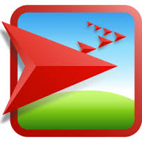

Scratch is a programming language and an online community where children can program and share interactive media such as stories, games, and animation with people from all over the world. As children create with Scratch, they learn to think creatively, work collaboratively, and reason systematically
Python is an interpreted, object-oriented, high-level programming language with dynamic semantics. Its high-level built in data structures, combined with dynamic typing and dynamic binding, make it very attractive for Rapid Application development, as well as for use as a scripting or glue language to connect existing components together. Python's simple, easy to learn syntax emphasizes readability and therefore reduces the cost of program maintenance. Python supports modules and packages, which encourages program modularity and code reuse.

Arduino is an open-source computer hardware and software company, project and user community that designs and manufactures microcontroller-based kits for building digital devices and interactive objects that can sense and control objects in the physical world.

A weather balloon is a balloon which carries instruments aloft to send back information on atmospheric pressure, temperature, humidity and wind speed by means of a small, expendable measuring device called a radiosonde. These are pictures from the day my class launched this project dated 9, December 2016. We had 2 failed attempts but we achived it on our 3rd try as we removed some stuff.

NetLogo is is a multi-agent programmable modeling environment. It is used by tens of thousands of students, teachers and researchers worldwide. Cool isn't it?
